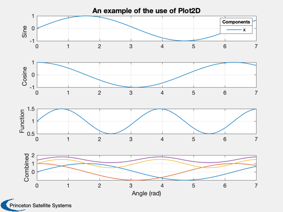
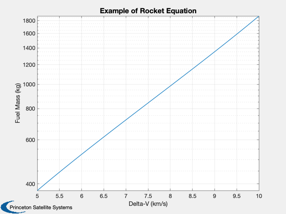
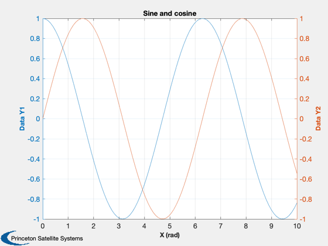
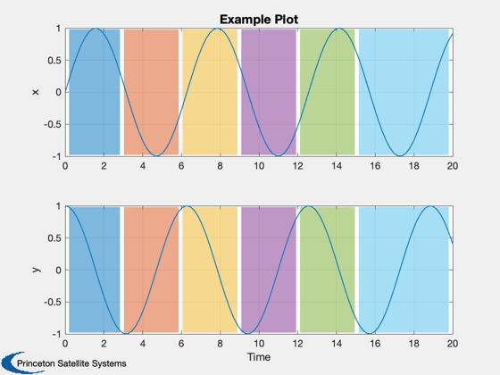

Examples of 2D plotting in the toolbox
Plot in linear and logarithmic scales, with a double y-axis, and add shading to 2D plots.
See also AddFillToPlots, Plot2D, PlotDoubleYAxis, Mag
Contents
%-------------------------------------------------------------------------- % Copyright (c) 2007, 2015 Princeton Satellite Systems, Inc. % All rights reserved. %--------------------------------------------------------------------------
Time history plotting with Plot2D
Plot2D was developed to enable concise plotting of time history data after a simulation. It condenses repetitive lines of code to specify the title, axis labels, etc. into a single function call. Data can be indexed to separate subplots. You can also specify logarithmic scaling for each axis, which causes loglog, semilogx, or semilogy to be used instead of plot.
In this example, the data has four rows, as we take a 3D vector and append the magnitude to the end. The data is indexed to four subplots. The empty input uses the default plot type, or linear axes. Note that the axes labels and plot indexing use cell arrays.
t = linspace(0,7); x = [sin(t);cos(t);1+sin(t).*cos(t)]; Plot2D( t, [x;Mag(x)], 'Angle (rad)', {'Sine','Cosine','Function','Combined'},... 'An example of the use of Plot2D',[],{1,2,3,[1 2 3 4]} ); legend('x','y','z','|r|') LegendTitle( 'Components',9 )
Warning: Ignoring extra legend entries.
Logarithmic scale plot.
A good example for using a log scale with Plot2D is the rocket equation. On a log scale, the relationship between delta-V and fuel mass is a straight line.
dV = linspace(5,10); vExhaust = 5; % km/s massPayload = 200; % kg mass = massPayload*(exp(dV/vExhaust)-1)./(1 + (1 - exp(dV/vExhaust))*0.05); Plot2D(dV,mass,'Delta-V (km/s)','Fuel Mass (kg)','Example of Rocket Equation',... 'ylog');
Plotting with a double-y axis
This wrapper to plotyy allows you to specify the plot labels directly just as in Plot2D.
x = linspace(0,10); yL = cos(x); yR = sin(x); yLabelL = 'Data Y1'; yLabelR = 'Data Y2'; xLabel = 'X (rad)'; titleS = 'Sine and cosine'; name = 'PlotDoubleYAxis'; PlotDoubleYAxis( x, yL, yR, xLabel, yLabelL, yLabelR, titleS, name );
Plot shading
AddFillToPlots allows you to shade different sections of a 2D plot to convey mode data, such as eclipses or control regimes. You can specify the colors and transparency of the patches. Mode changes are detected from the input data using diff.
time = linspace(0,20); data = zeros(size(time)); data(time>3)=1; data(time>6)=2; data(time>9)=3; data(time>12)=1; data(time>15)=3; x = sin(time); y = cos(time); h = Plot2D( time, [x;y], 'Time', {'x','y'}, 'Example Plot' ); AddFillToPlots(time,data,h,'auto',.5); %-------------------------------------- % $Date$ % $Id: 9c0673994ce22bb862f8f5eec76bf67e669bdba3 $